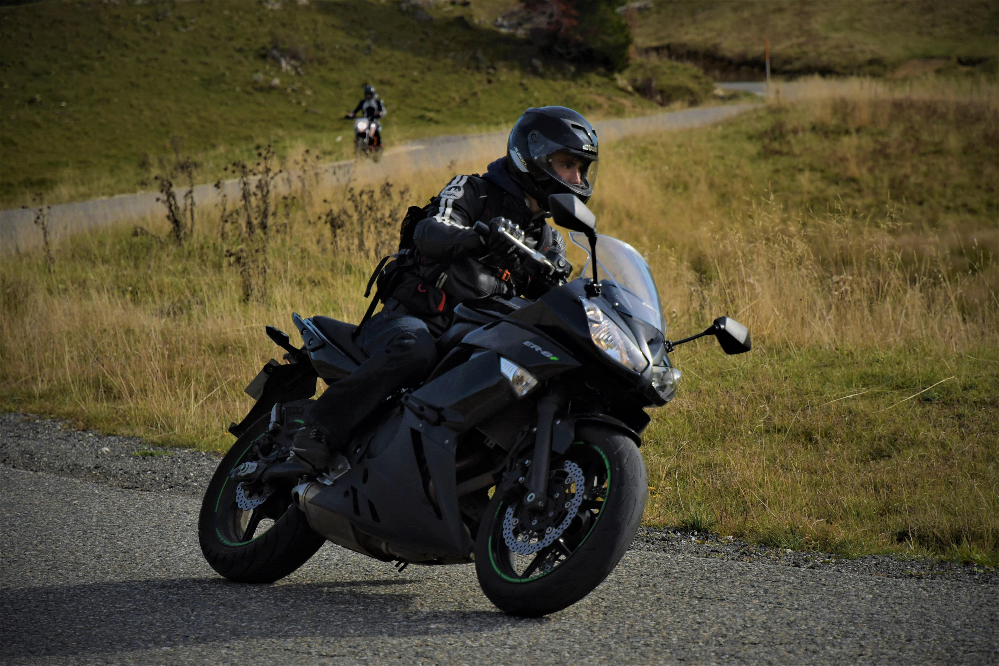

Je m'apelle Baptiste ALCHAIR j'ai 20 ans et j'habite a MARIGNIER. Je suis actuellement en train de préparer un BTS SN IR (systemes numériques option informatique et réseau) au lycée charles poncet de CLUSES. J'aimerais à l'avenir intégrer la licence professionelle DIM (Developpeur Informatique Multisupport) en alternance pour l'an prochain.
Experiences professionelles et diplomes
J'ai beacoup travaillé pendant les week-ends, les vacances d'hiver et d'été ces trois dernières année dans un supermarché où je m'occupais principalement du rayon coupe. J'ai aussi, dans le cadre de mon BTS, effectué un stage en entreprise d'une durée de six semaines chez IFI-Informatique à FILLINGES.
J'ai en ma possession le Brevet des collèges, un Bac STI2D option SIN (Systèmes informatique et numérique) mention "Bien" ainsi que le Permis B et A2

Autres activitées
Mise à part la programation, j'aime faire des activitées de montagne comme la randonée, via ferrata ou du ski en hiver. J'aime aussi alller sur internet et jouer au jeux vidéos. Comme je l'ai dit si dessus, je suis aussi motard et j'aprecie aller rouler avec mes amis ou partir en voyage quelques jours notament dans le sud de la france ou j'y possède une maison familliale.
Voici le projet qui m'as été confié a moi eta mon groupe lors de mon année de terminale. Le but du projet étais de faire une véhicule motorisé capable de se déplacer sur tous type de terrain grace a ses chenilles, d'etre contrôler à distance via une communication bluetooth et une application pour smartphone tout cela géré par une carte Arduino-Mega. Il serais aussi capable de detecter un obstacle grace a un capteur a ultrasons et de sortir d'un endroit sombre en suivant les endroits ou la lumière es la plus forte.
Ma partie du projet consistait à faire communiquer un smartphone et un module bluetooth afin de controler les moteurs grâce à une application sous adroïd.
J'ai donc développé cette application sous app inventor et cela fonctionnait parfaitement, il y avais sur l'iterface des flèches pour diriger le vehicule, un boutton pour le stopper et un écran permettant de se ceonnecter au module bluetooth
Ce projet m'as valu une note de 16/20 (coef 12) au BAC.
Projet 2: BTS SN IR Interface brasserie la rochoise
Voici une présentation de mon projet de seconde année de BTS. Nous travaillons acctuellement moi et mon groupe pour une brasserie à LA-ROCHE-SUR-FORONT la "Brasserie la rochoise". Le brasseur nous à demandé d'informatiser ses proesus de fermentation des bieres qu'il produit. Le but est de lui fournir un IHM qui afficheras le plus d'informations utiles à son travail, il y auras un suivis des phases de fermentations, mais aussi un suivis des températures des six cuves qu'il posède et un suivis de la température de la chambre chaude (intervient dans la troisiéme fermentation). Il pourras par la suite aller consulter une base de donnée pour voir les historiques des tenpératures de fermentations de chaques brassin (biere qui n'as pas encore fini de fermenter).
Tout cela est controlé par trois cartes Raspberry-PI, une qui sera dans la chambre chaude et qui s'occupe de controler une prise pilotable branchée sur un radiateur afin de maitriser la température de la salle et d'envoyer a la carte superviseur les données de température.
Une autre qui s'occupe de récupérer les températures des six cuves de frementations etde les envoyers a la carte superviseur.
et enfin la carte superviseur qui s'occupe de traiter les donnée de températures ainsi que d'héberger l'IHM Web sur Apache et la bases de donnée sous My-Sql. Elle pourras aussi envoyer un siganl d'allarme par mail au brasseur si la températures d'une des cuves ou de la chambre chaude dépasse un certain seuil.
Ce projet est encore en cour de developpement mais je peu faire un démonstration de ma partie qui est de programmer tout ce que je vien d'ecrire sur la carte superviseur, IHM en Html/Css, Php, Sql etc...